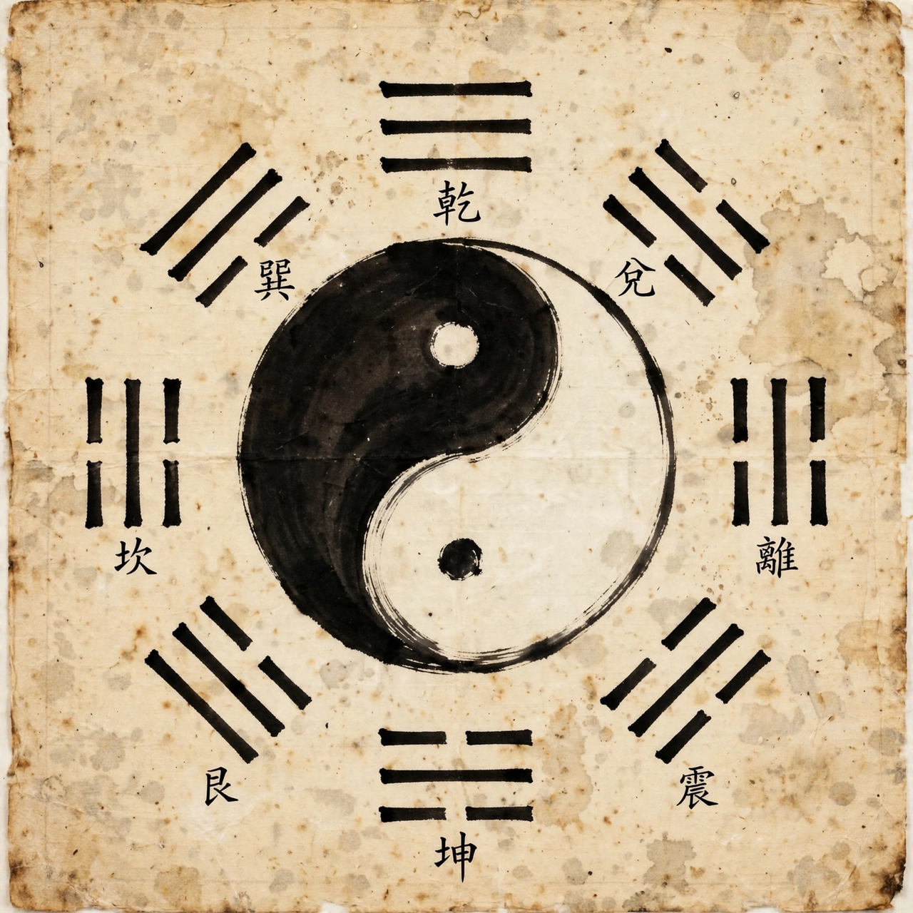

From Wikipedia, the free encyclopedia
| Taoism | |
|---|---|
| Type | Philosophy and religion |
| Origin | China, 4th century BC (textual tradition) |
| Key texts | Tao Te Ching; Zhuangzi; Daozang |
| Key figures | Laozi, Zhuangzi, Zhang Daoling |
| Adherents | Concentrated in China and the Chinese diaspora; diffuse worldwide influence |

Taoism or Daoism is a family of Chinese philosophical and religious traditions centred on living in harmony with the Tao (Dao, 'the Way'), the source and pattern of the universe. Philosophical Taoism grows from the Tao Te Ching, attributed to Laozi, and the Zhuangzi; religious Taoism, organised from the 2nd century AD, adds gods, rituals, alchemy, temples and priesthoods, and is one of China's five officially recognised religions.
Core concepts include wu wei (effortless action), naturalness (ziran), simplicity, compassion, moderation and humility — the 'Three Treasures' — and balance symbolised by yin and yang. Practices range from meditation and qigong to feng shui, Chinese medicine, ancestor rites and communal festivals; Taoist priests conduct funerals and exorcisms, and lineages such as Zhengyi and Quanzhen remain active. Taoist ideas profoundly influenced Buddhism's Chinese forms (especially Chan/Zen), Chinese art and literature, and modern Western spirituality.